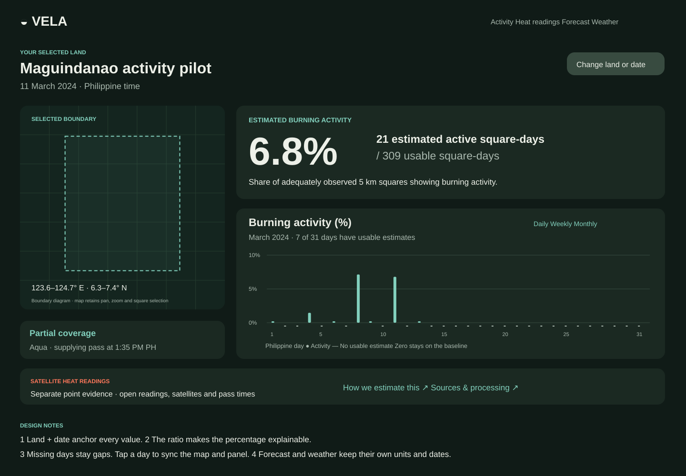
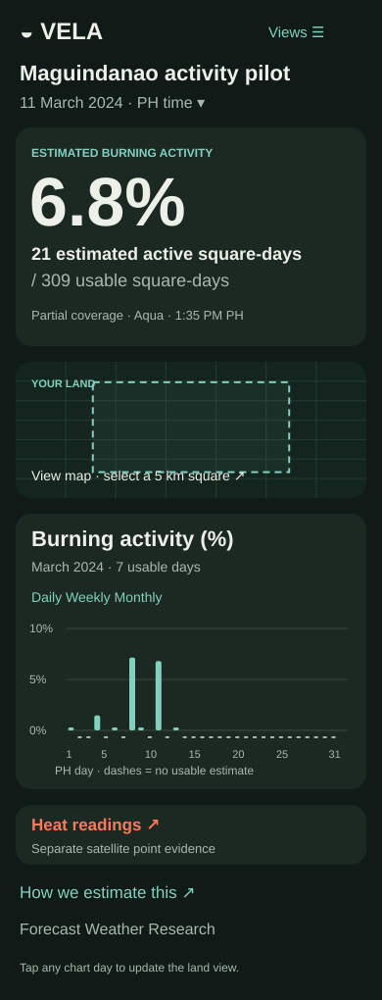

VELA · land, activity, history
The boundary and date stay beside the answer. The chart shows the share of usable square-days with activity, with explicit gaps where coverage is missing.
Annotated desktop

Mobile

Boundary diagrams indicate layout, not a new basemap or invented satellite positions. All numerical activity values come from the processed pilot. Heat counts remain in their own evidence view; their full source details remain reachable.
Exact selection text and unavailable states